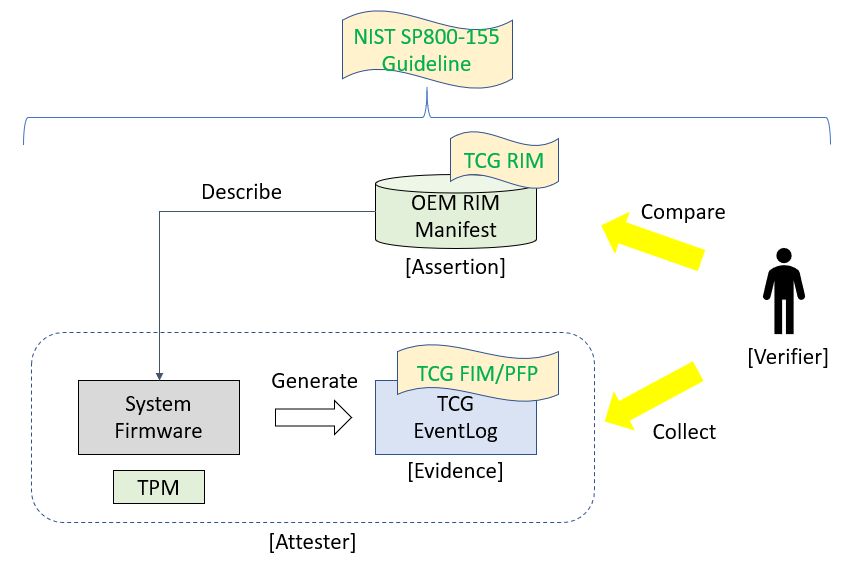

Overview
System firmware (BIOS/UEFI) plays an important role in computer platform security. If the system firmware or configuration is altered from the intended state, the system may experience loss of confidentiality, integrity, and availability, including system instability, system failure, and information leakage. Detecting a firmware code or configuration change is of great importance, and can be accomplished by measuring and monitoring firmware integrity.
In 2011, the National Institute of Standards and Technology (NIST) published a draft version BIOS Integrity Measurement Guidelines (SP800-155). More recently, the Trusted Computing Group (TCG) has developed the following documents to discuss firmware integrity measurement:
TCG Reference Integrity Manifest Information Model (RIM-IM)
TCG PC Client Reference Integrity Manifest (PC-RIM)
PC Client Platform Firmware Profile (PFP)
PC Client Platform Firmware Integrity Measurement (FIM) - Draft
The relationship between the above documents is as follows:
The NIST SP800-155 specification provides a general guideline on requirements. It does not describe implementation details.
The TCG RIM-IM specification defines the Reference Integrity Manifest (RIM) structure that a Verifier uses to validate expected values (Assertions) against actual values (Evidence).
The TCG PC Client RIM specification complements the TCG RIM-IM specification and describes the RIM file formats, RIM storage locations within the PC Client, and provides references for the content of the RIM support files.
The TCG PFP defines the implementation for a PC client firmware architecture. It defines how the platform firmware measures the firmware components into Trusted Platform Module (TPM) Platform Configuration Register (PCR) and how the firmware records the actions in an event log.
The TCG FIM draft specification provides a framework for determining the configuration of the hardware and the identity of the firmware which has executed to initialize the endpoint into a booted state. A FIM compliant platform shall implement the TCG PFP specification in order to provide runtime evidence and the platform shall also provide assertions based upon the TCG RIM specification.
In this document, we will focus on the TCG Platform Firmware Profile specification. The PFP specification defines how a platform firmware contributes to the Root of Trust for Measurement (RTM) of the platform through extending digests (measurements) of code into a TPM Platform Configuration Register (PCR). The PFP specification also provides the documentation of that measurement in an event log.
Figure 1 below shows a simple example of the firmware validation process. An Original Equipment Manufacturer (OEM) provides a RIM as the assertion to describe the system platform. When a corresponding system boots, the platform firmware measures the component into some TPM PCR's and generates an event log as evidence. The whole platform acts as an attester and presents the event log and PCR's as evidence to a verifier. Then the verifier can compare the evidence (event log and PCRs) and compare it with the assertion (RIM manifest).
Figure 1 Measurement and Attestation

A verifier can use various policies to determine the state of the platform. Some example policies include the following:
All event log match - It means the platform is expected to meet all of the expected values.
Event log on code (PCR0) and security policy (PCR7) match but the configuration data (PCR1) has a mismatch -- It means someone changed the BIOS setup configuration.
Event log on security policy (PCR7) match but code (PCR0) mismatches -- It means someone has updated the platform firmware code.
All event log mismatch -- It means the platform is not in the expected code or configuration state.